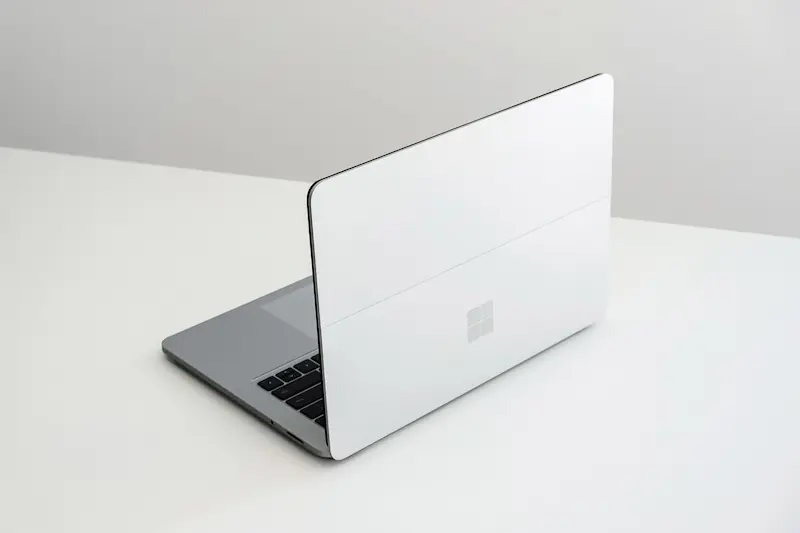

Min computer

Type
[Her skal du selv skrive en kort beskrivelse af din egen computer]
Specifikationer
[Her skal du selv kort beskrive og liste specifikationerne på din computer]

[Her skal du selv skrive en kort beskrivelse af din egen computer]
[Her skal du selv kort beskrive og liste specifikationerne på din computer]